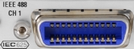

IEEE 488 CH 1/2 Connectors (Optional)
 |
IEEE 488 CH 1 and IEEE 488 CH 2 are two equivalent GPIB bus connectors according to standard IEEE 488/IEC 625. The connectors are available as options R&S CMW-B612A and R&S CMW-B612B, respectively. Use these connectors for remote control of the instrument in a GPIB bus system.